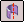
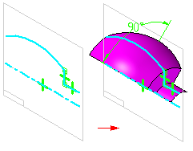
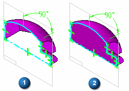

Revolved command
Use the Revolved surface command

to create a construction surface by revolving a profile around an axis of revolution.
When you create a revolved surface using a closed profile that is revolved less than 360 degrees, you can use the Open Ends and Close Ends options on the command bar to specify whether the ends of the surface are open (1) or closed (2). When you set the Close Ends option, planar faces are added to the ends of the feature to create a closed volume.
